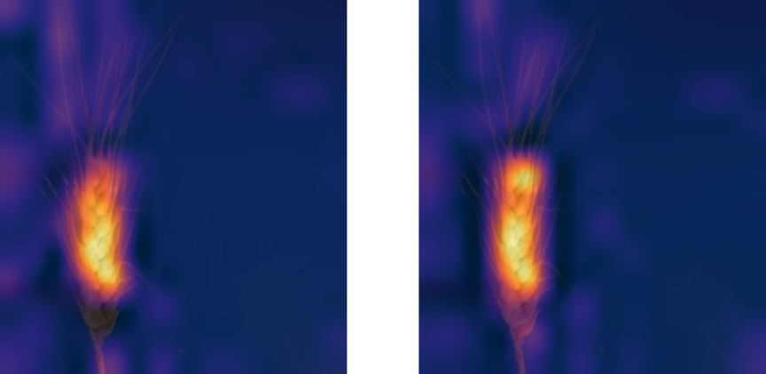
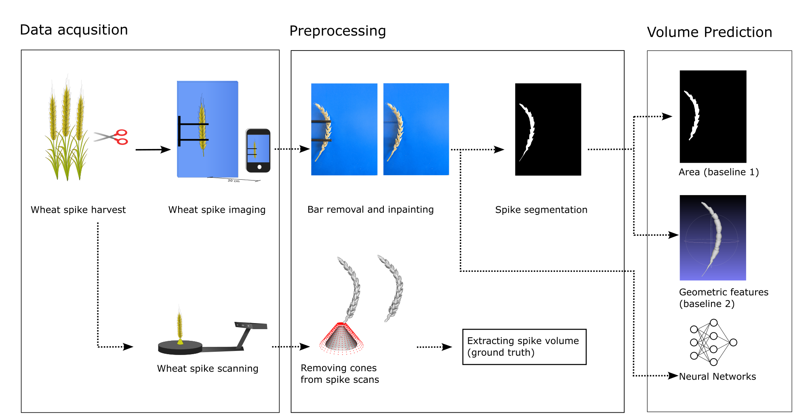
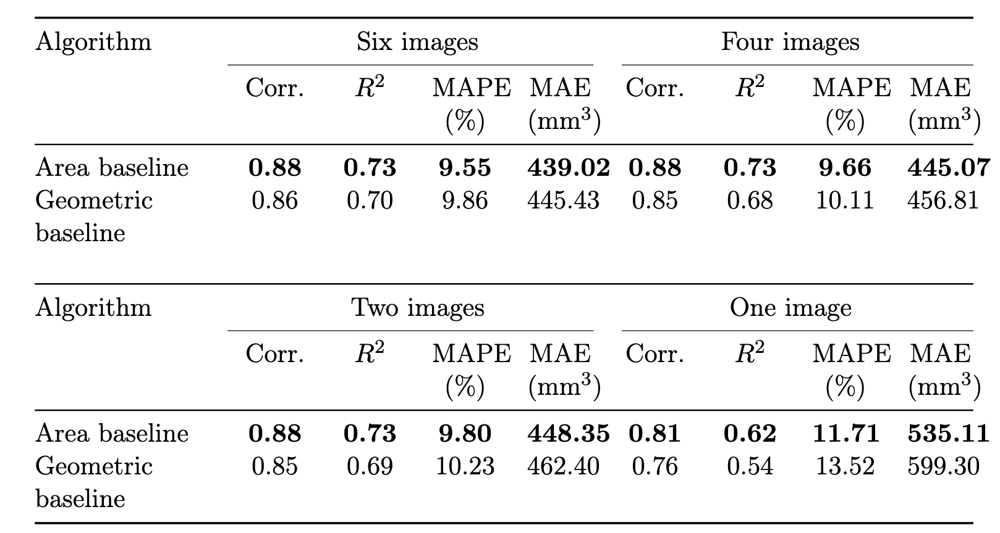
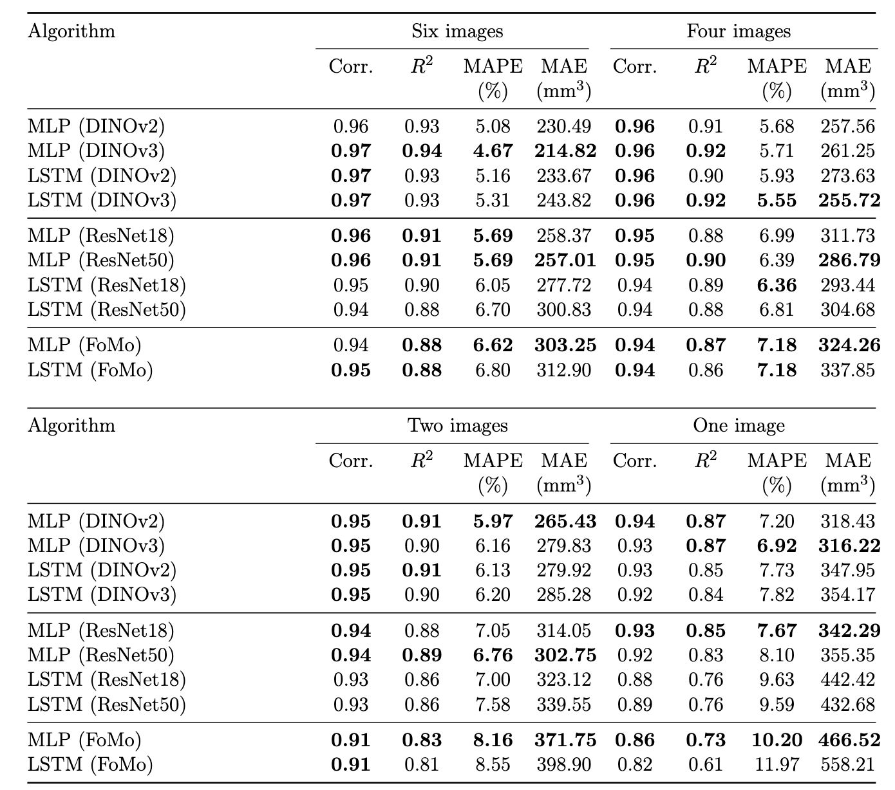
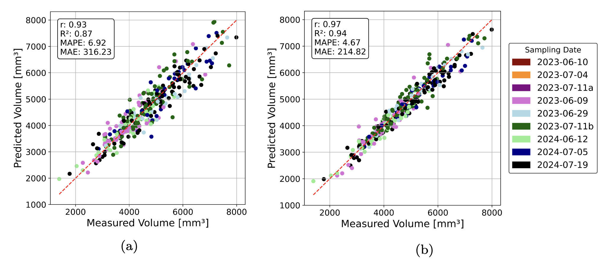
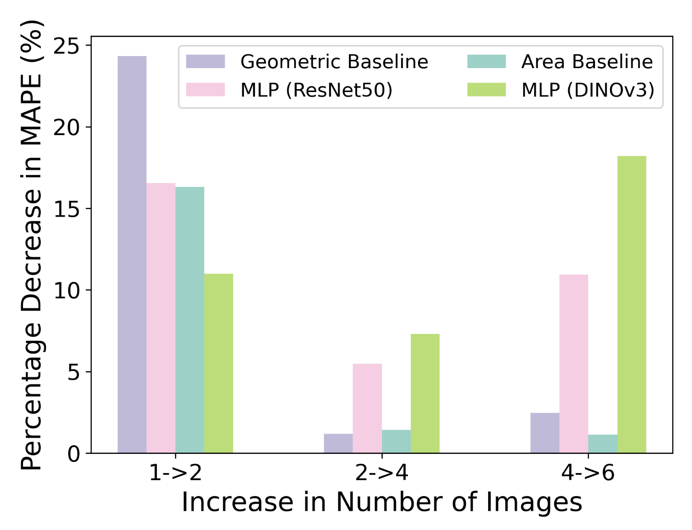
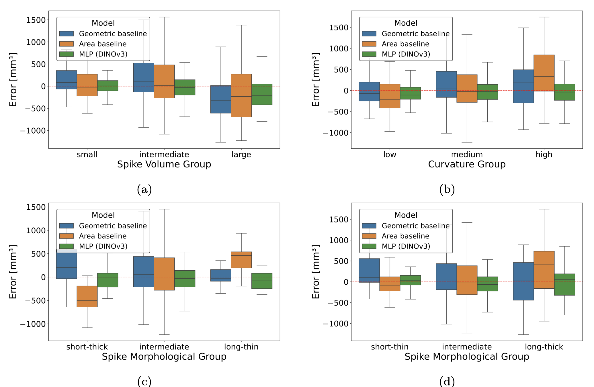
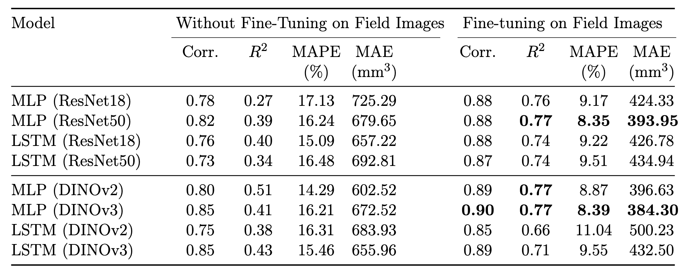
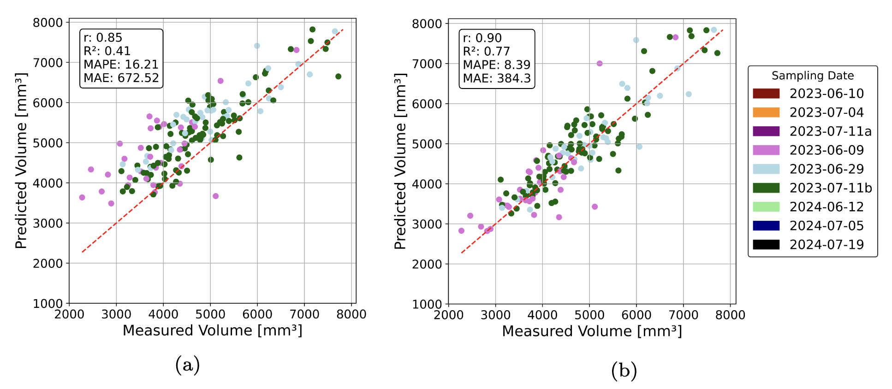

Estimating three-dimensional morphological traits such as volume from two-dimensional RGB images presents inherent challenges due to the loss of depth information, projection distortions, and occlusions under field conditions. In this work, we explore multiple approaches for non-destructive volume estimation of wheat spikes using RGB images and structured-light 3D scans as ground truth references. Wheat spike volume is promising for phenotyping as it shows a high correlation with spike dry weight, a key component of fruiting efficiency. We define the total spike volume per unit area of a wheat canopy at flowering as fruiting capacity. Accounting for the complex geometry of the spikes, we compare different neural network approaches for volume estimation from 2D images and benchmark them against two conventional baselines: a 2D area-based projection and a geometric reconstruction using axis-aligned cross-sections. Fine-tuned Vision Transformers (DINOv2 and DINOv3) with MLPs achieve the lowest MAPE of 5.08% and 4.67%, and the highest correlation of 0.96 and 0.97 on six-view indoor images, outperforming fine-tuned CNNs (ResNet18 and ResNet50), a wheat-specific backbone, and both baselines. When using frozen DINO backbones, deep-supervised LSTMs outperform MLPs, whereas after fine-tuning, improved high-level representations allow simple MLPs to outperform LSTMs. We demonstrate that object shape significantly impacts volume estimation accuracy, with irregular geometries such as wheat spikes posing greater challenges for geometric methods than for deep learning approaches. Fine-tuning DINOv3 on field-based single side-view images yields a MAPE of 8.39% and a correlation of 0.90, providing a novel pipeline and a fast, accurate, and non-destructive approach for wheat spike volume phenotyping.


Write your explanation of the baseline results here.


Write your additional explanation here.

Write your additional explanation here.



Write your explanation of the field image results here.